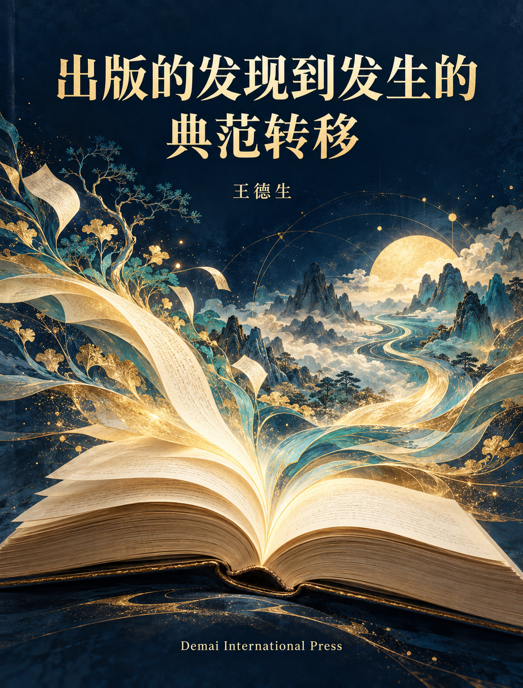

SDE Universes · 德麦国际专著 · 第265卷

DEMAI INTERNATIONAL · MONOGRAPH 265
出版的发现到发生的
典范转移
阅读、学习、智能问对：读者—文本—作者的持续发生
以“发现为总纲”的出版面临死亡，转向“发生为总纲”的出版就会新生和升维。
还有读者吗？作者是谁？当文本日益同质化，出版如何重新成为知识与主体发生的开始？本书从这三个问题出发，提出“阅读—学习—智能问对”三合一出版单元，重建读者、文本与作者相互改变的持续过程。
阅读 · 学习 · 智能问对
全书论证的五个支点
出版困境
从寻找现成读者、作者与内容，追问这一组织原则为何难以维系。
发生的复合体
读者、文本与作者的改变，在同一个互动过程中相互构成。
新的出版单元
阅读、学习、智能问对相互进入，形成持续的问题、理解与修订。
制度与经营
把编辑责任、证据、版本、反馈和投入写进出版社的组织方式。
接受检验
区分总纲分类与实际成效，保留不利结果和发现型出版成功的反例。
全书结构
- 导论 从出版的死亡危机到新生与升维
- 第一编 发现为总纲的出版为何面临死亡
- 第一章 收入增长为何不能解除出版的生存危机
- 第二章 还有读者吗
- 第三章 作者是谁
- 第四章 文本同质化与符号刺激的边界
- 第五章 发现为总纲的出版怎样走到完成点
- 第二编 从发现总纲转向发生总纲
- 第六章 发现与发生的根本分界
- 第七章 读者文本作者复合体
- 第八章 出版发生的SDE机制
- 第九章 持续发生如何带来新生与升维
- 第十章 与既有出版和阅读理论对话
- 第三编 读者的新生与升维
- 第十一章 读者如何成为读者
- 第十二章 阅读中如何生成新的理解
- 第十三章 学习如何超出知识掌握
- 第十四章 个人知识如何发生
- 第十五章 读者主体性与阅读自由
- 第四编 作者的新生与升维
- 第十六章 作者如何在写作中形成自己
- 第十七章 人和AI共同创作的作者结构
- 第十八章 读者怎样进入作者的发生
- 第十九章 作者本人作者形象与智能体声音
- 第二十章 持续创作中的劳动与边界
- 第五编 文本的新生与升维
- 第二十一章 文本何以超出符号刺激
- 第二十二章 文字不变时文本仍可发生什么
- 第二十三章 从公共文本到个人知识成果
- 第二十四章 文本怎样吸收反馈形成新版本
- 第二十五章 不同作品的文本发生尺度
- 第六编 阅读学习智能问对三合一
- 第二十六章 新出版单元的成立条件
- 第二十七章 三种入口与多条发生路径
- 第二十八章 智能问对的发生机制
- 第二十九章 学习包如何成为发生条件
- 第三十章 一轮完整发生如何回到下一轮
- 第七编 出版社的新生与价值重建
- 第三十一章 出版社的新组织任务
- 第三十二章 新单元的制作与维护流程
- 第三十三章 内容来源贡献与责任的治理
- 第三十四章 持续发生的成本收益与定价
- 第三十五章 从一本书到知识发生网络
- 第八编 出版升维的检验与典范成立
- 第三十六章 思想专著的三合一实验
- 第三十七章 实践图书的三合一实验
- 第三十八章 文学作品的三合一实验
- 第三十九章 如何证明发生并识别假发生
- 第四十章 出版新生与升维的成立条件
- 结语 以发生为总纲的出版新生
- 参考资料与核查入口
作者与版本
王德生，本书总纲与论证方向的提出者。本书围绕出版从发现到发生的典范转移展开，讨论阅读、学习与智能问对如何形成持续的出版关系。
本书由王德生提出总纲和论证方向，经10条智能体写作线协作成稿、统一母题检查与统稿。书中的设计情境、实验方案和经营假设均与已获实证区分，具体范围见正文。